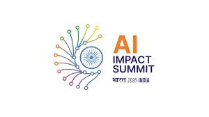
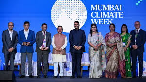
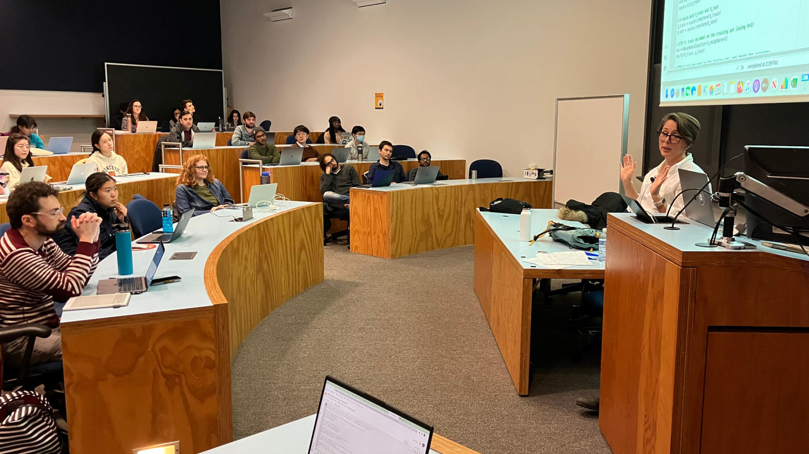

EVENTS
India AI Impact Summit 2026 – New Delhi (Feb 16–20, 2026)
Organized by the Ministry of Electronics and Information Technology (MeitY) under the IndiaAI Mission, this five-day summit focused on responsible AI, ethics, governance, and real-world AI applications. Experts discussed AI use in healthcare, banking, agriculture, education, and smart governance, highlighting scalable, secure, and inclusive solutions. The event encouraged collaboration between government, industry, and academia, inspiring students to build practical and ethical AI skills.

EVENTS • Mumbai Climate
Mumbai Climate Week 2026 – Mumbai (Feb 17–19, 2026)
This sustainability conference brought together experts and students to explore how Data Science and AI address climate challenges. Key topics included climate data modeling, environmental AI, renewable energy, and data-driven policy decisions. The event emphasized using technology not only for business growth but also for environmental and social impact.
WORKSHOPS • PYTHON
Python for Data Science Workshop — Chennai (14 February 2026)
Organized by Adhoc Aditya Network, this one-day hands-on workshop focused on building strong foundations in Data Science using Python. Participants learned Python basics and key libraries like pandas, NumPy, and Matplotlib. They worked with real datasets to practice data cleaning, analysis, visualization, and were introduced to simple machine learning workflows.

WORKSHOPS • ADVANCED PYTHON
Advanced Data Science Workshop — Chennai (6 February 2026)
Conducted by the Data Science Lab of a leading university in Chennai, this workshop was designed for learners with basic Python knowledge. It covered advanced data preprocessing, exploratory data analysis (EDA), and model training and evaluation using real datasets. The session emphasized analytical thinking, structured problem-solving, and practical industry-oriented workflows.